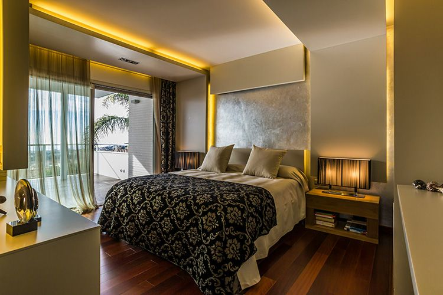
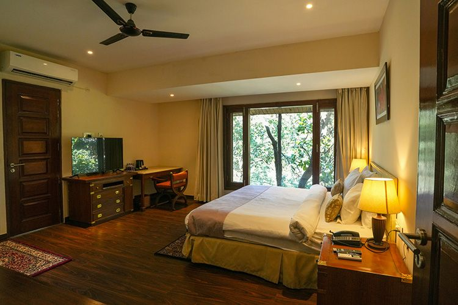
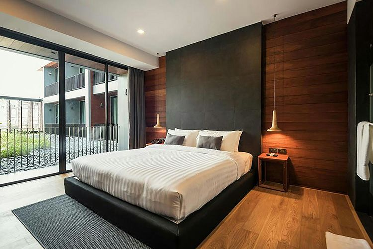
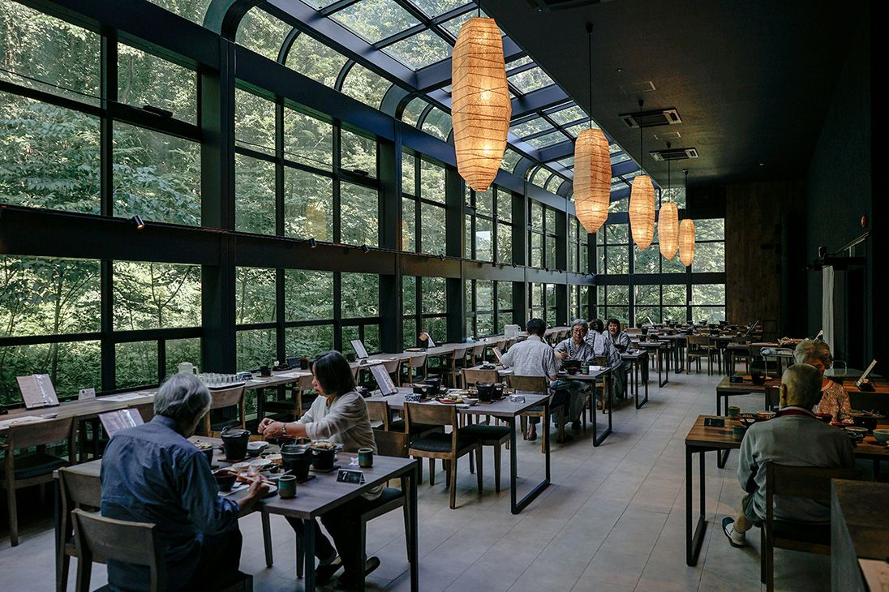
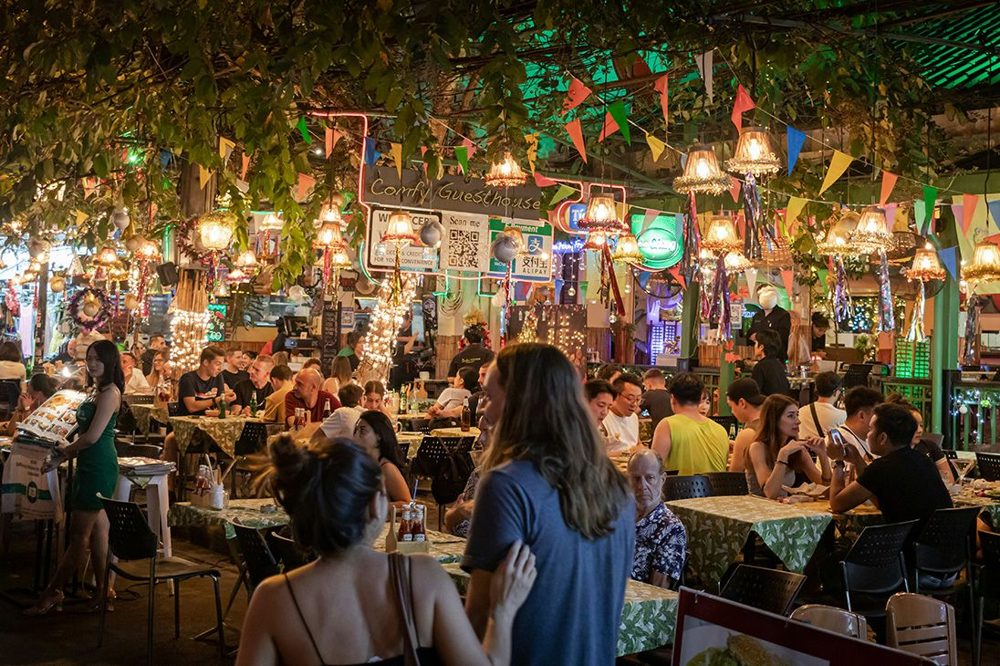

夕景を迎えるラウンジ
夕方から夜へ移ろう時間帯に合わせて、ハーブティーとシグネチャー カクテルをご用意。窓辺の席で静かに過ごす時間が人気です。
滞在体験
エントランスに足を踏み入れた瞬間から、街の喧騒を遠ざける導線を 丁寧に設計。香り、照明、音量、接客のテンポまでを整え、何もしない 時間さえ豊かな滞在価値へと変えていきます。
大切な人との記念日にも、一人で感性を整える小旅行にも。上質であり ながら肩肘張らない、現代のラグジュアリーを体験していただけます。
夕方から夜へ移ろう時間帯に合わせて、ハーブティーとシグネチャー カクテルをご用意。窓辺の席で静かに過ごす時間が人気です。
コンシェルジュが記念日演出、近隣ギャラリー巡り、深夜到着時の お食事手配まで、滞在目的に合わせてきめ細かくサポートします。
客室にはピローメニュー、アロマ、ティーセットを常備。就寝前の ひとときを静かに整え、翌朝まで心地よくお過ごしいただけます。
客室案内
眺望、広さ、過ごし方に合わせて選べる代表的なお部屋をご紹介します。

大きな窓辺のデイベッドとキングベッドを備えた、二人旅に人気の スタンダードスイート。

角部屋ならではの開放感と専用テラスが魅力。朝食を客室でゆっくり 楽しみたい方におすすめです。

リビング、ダイニング、ビューバスを独立配置した最上級スイート。 特別な節目の滞在にふさわしい一室です。
館内施設
スパ、温水プール、オールデイダイニング、24時間対応の コンシェルジュまで。滞在時間がそのまま贅沢になるよう、 必要な機能を静かに整えています。
和漢植物を取り入れたトリートメントで、旅の疲れをやさしく解きほぐします。
朝はやわらかな自然光、夜はキャンドルの灯りに包まれる温水プール。
レストラン予約、花束手配、周辺散策の提案まで滞在前からサポートします。
食と周辺体験

旬の魚介と東京近郊野菜を薪火で仕上げるメインダイニング。シェフの おまかせコースは、ワインペアリング付きで記念日利用にも好評です。

近隣ギャラリーの閉館後貸切案内や、水辺のナイトクルーズを組み合わせた 宿泊者限定プラン。都市滞在ならではの高揚感をお楽しみいただけます。
信頼の理由
「東京にいながら、短い旅に出たような満足感がありました。客室の 静かさと朝食の美しさが特に印象的で、記念日にまた利用したいです。」
「スタッフの距離感が絶妙で、過剰すぎず、それでいて必要な時には すぐに応えてくれる。都会型ホテルとして理想的な滞在でした。」
ご宿泊前のご案内
記念日利用や短い週末滞在でも安心してご検討いただけるよう、 お問い合わせの多い内容をまとめました。
はい。花束、メッセージプレート、客室デコレーション、ディナー時の 演出まで、ご予算に応じて事前にご提案します。
可能です。ご到着当日の午前中からベルデスクでお預かりし、観光や お仕事の後に身軽にチェックインしていただけます。
静かな客室環境と高速 Wi-Fi、ラウンジ席をご用意しているため、 一人旅や短期のリフレッシュ滞在にも多く選ばれています。
ご予約案内
期間限定で、公式サイト予約限定のシャンパンハーフボトルと レイトチェックアウト特典をご用意しています。